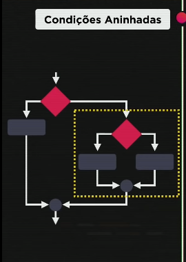
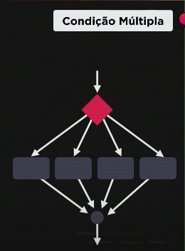
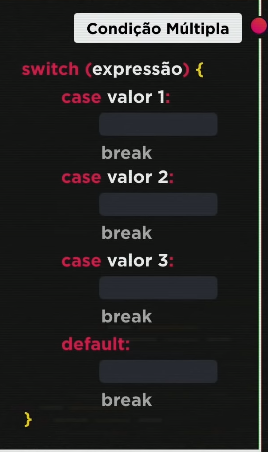
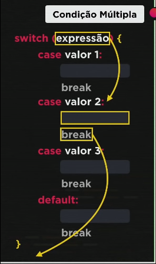

Quando eu crio uma condição aninhada, eu crio condições dentro de condições:
Exercício 012
Além da condição aninhada, existe uma outra chamada condição multipla, que serve para valores fixos. Ela tem a possibilidade de apresentar vários valores fixos.
Exercício 013
Representação:
OBS.: É EXTREMAMENTE NECESSÁRIO USAR O BREAK APÓS CADA VALOR, COMO MOSTRA NA FIGURA ABAIXO:
